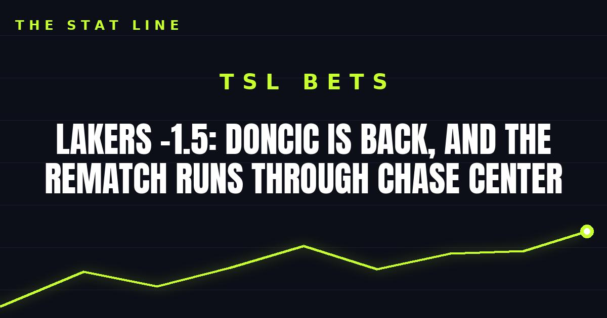

Lakers -1.5: Doncic Is Back, and the Rematch Runs Through Chase Center
Luka Doncic is off the injury report after sitting out Wednesday, the Lakers already beat Golden State by 22 once this season, and the line is just 1.5. Take the better, healthier team.

Game slip: Los Angeles Lakers at Golden State Warriors
• Matchup: Los Angeles Lakers (4-1) at Golden State Warriors (2-3)
• Time/channel: Friday, 10:00 p.m. ET, Prime Video, from Chase Center in San Francisco — NBA Cup group play, West Group C
• Odds (PickDawgz / FanDuel consensus): Lakers -1.5 (-115); total 234.5; moneyline Lakers -130, Warriors +110
• Injury report: Lakers — Luka Doncic OFF the injury report (back tightness; sat Wednesday as a precaution on the second night of a back-to-back); Ziaire Williams questionable (left foot/heel); Cameron Carr out (oblique); Adou Thiero out (knee). Warriors — Jimmy Butler out (ACL), Moses Moody out (knee), Kristaps Porzingis out (not with team), Gui Santos doubtful (left knee tendinitis). No fresh flag on a Lakers key player — Doncic's clearance is the news.
• Storylines: (1) The rematch: the Lakers won the first meeting 127-105, with Doncic scoring 28, and rookie Yaxel Lendeborg has made plain he hasn't forgotten the needle from that night. (2) Doncic is back after sitting Wednesday — and the Lakers won anyway, 103-87 over the Clippers behind Quentin Grimes' 23. (3) Golden State has won two straight, most recently 119-114 at Minnesota behind Stephen Curry's season-high 44 (16-for-16 from the line), so this is not a dead team — it's a short-handed one.
The bet: Lakers -1.5
The better team, the healthier team, and a line that barely asks anything. The Lakers already beat this Warriors team by 22, they just proved they can win without Doncic, and now Doncic is back — off the report entirely, not questionable, not a game-time decision. Golden State is playing without Butler, Moody and Porzingis, and its depth is the story of its season so far.
The honest caveat: laying points on the road against Curry is never comfortable, especially with Curry coming off a 44-point night and the Warriors riding two straight wins. If Curry gets hot early and Chase Center gets loud, 1.5 can vanish in a quarter. But the spot — rested star back, deeper roster, a 22-point head-to-head data point — is the side to be on.
If gambling stops being fun, call 1-800-GAMBLER.
Sources: PickDawgz — Lakers vs. Warriors, FanDuel — Warriors vs. Lakers, WhyNBA — Friday schedule and injury report